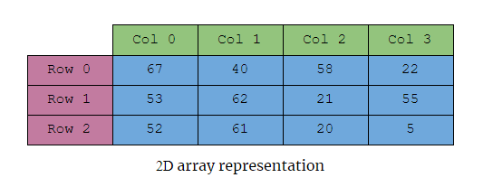

SPACE Data Structure Visualizer
This project will help students in the Data Structures and Algorithms class at SUNY Poly. SPACE is a project that visualizes data structures and algorithms. The project has two parts:
- A C++ header file that the user must #include in their program
- A browser app that does visualizations by reading a data file produced by the C++ header
Installation
- Go to https://github.com/giardim/SPACE
- Click the green button labeled "Code"
- Click download zip
- Right click the zip file in your downloads folder
- Extract it
Usage
- Copy the space.hpp file into your project directory (do not move or delete any other files in the extracted folder). This should mean that the space.hpp file and your program file are in the same directory
- Open the index.html file with a web browser
- Click the manual button on the browser app to view detailed instructions on using SPACE
Installation
- Go to https://github.com/giardim/SPACE
- Click the green button labeled "Code"
- Click download zip
- Right click the zip file in your downloads folder
- Extract it
Usage
- Copy the space.hpp file into your project directory (do not move or delete any other files in the extracted folder). This should mean that the space.hpp file and your program file are in the same directory
- Open the index.html file with a web browser
- Click the manual button on the browser app to view detailed instructions on using SPACE
Tutorial
Lets get started using SPACE. After you have followed the installation instructions, you should be ready to write your first program using SPACE! Lets make a simple project to demonstrate how SPACE works.
Simple Array
Here is a simple C++ program that creates an array of 7 elements.
#include <iostream>
#include "space.hpp"
int main() {
//Create array of 7 elements
int my_array[7] = {11, 20, 23, 4, 15, 6, 78};
//Call the space::sout function to output the array to data.json
space::sout("my_array", my_array, 7);
return 0;
}
First, we must #include the "space.hpp" file at the start of your program. Doing this will allow you to use the space::sout() function. The space::sout() function is the only function you will need to use to visualize your programs with SPACE.
What is the space::sout() function? The space::sout() function is a lot like printf(). All it does is take the data structure you give it (in this case a simple array of integers) and prints it out into a file. It also does some formatting behind the scenes to get your data structure into JSON format, but you don't need to think about that because its all automatic!
In this program the space::sout() function takes three arguments:
- "my_array" is the string that your array will be named in the visualizer
- my_array is the array itself
- 7 is the size of the array
After compiling and running this program, you will find a data.json file in your project directory. We will drag and drop this file into our browser app.
Browser App
To visuzalize the output of our demo program, open the index.html file from the SPACE directory with a web browser like Firefox or Chrome. With your file manager open, click and drag the data.json file into the browser window.
Now lets take a tour of the browser app.
Overview
The general layout of our application is a main visualization area on the right with a sidebar on the left.
Functionality
The user may drag a data.json file from their file explorer into the webpage. The data structures saved in the data.json file will populate the side bar. To visualize a data structure, click one of the elements in the side bar. This will fill the visualization pane with a view of that data structure.
The Visualization Pane
Hover your mouse over an element to see its value. Use the media controls at the bottom to play/pause automatic iteration through the save states of your structure. Use the bar to scrub through the save states of your structure.
The Side Bar
The sidebar contains a list of all data structures present in the data.json file. Clicking on one will open it in the visualization pane. Only one data structure may be visualized at a time. You can open the SPACE manual by clicking the button at the bottom of the side bar.
In the next section we will look at some examples of different data structures and sorting algorithms, and how you can use space::sout() to visualize them.
Examples
We know that space::sout() works kind of like printf() or std::cout, but how does that effect how we use it? Well lets imagine that we were just using std::cout to figure out what our data structures look like. To print an array with std::cout we need to use a for loop.
#include <iostream>
int main() {
// Create our array
int my_array[7] = {1, 2, 3, 4, 5, 6, 7};
// Print array to std::out
for (int i = 0; i < 7; i++) {
std::cout << my_array[i] << " ";
}
std::cout << std::endl;
return 0;
}
Output:
1 2 3 4 5 6 7
The for loop goes through every element of the array starting at my_array[0] up to my_array[6] with a " " space in between each element. It prints every element in the array because programmer hard coded the size of the array to be 7 and the number of iterations of the for loop to also be 7. If the loop had 4 instead of 7 in its condition then it would only print 4 elements. As you can see, to print out every element of the array, we need to know the size of the array. This same principle applies to space::sout(), which is why you need to pass in the size of your data structure as an argument.
This works for an array that doesn't change, but what if we modify it after we print it?
#include <iostream>
int main() {
// Create our array
int my_array[7] = {1, 2, 3, 4, 5, 6, 7};
// Print array to std::out
for (int i = 0; i < 7; i++) {
std::cout << my_array[i] << " ";
}
std::cout << std::endl;
my_array[0] = 200; // Change the 1 in the array to 200
return 0;
}
Output:
1 2 3 4 5 6 7
Obviously, we are still printing out the array as it was originally because after we update the array to turn 1 into 200, we dont print it again. Lets fix that.
#include <iostream>
int main() {
// Create our array
int my_array[7] = {1, 2, 3, 4, 5, 6, 7};
// Print array to std::out
for (int i = 0; i < 7; i++) {
std::cout << my_array[i] << " ";
}
std::cout << std::endl;
my_array[0] = 200; // Change the 1 in the array to 200
// Print array to std::out AGAIN after we change it
for (int i = 0; i < 7; i++) {
std::cout << my_array[i] << " ";
}
std::cout << std::endl;
return 0;
}
Output:
1 2 3 4 5 6 7
200 2 3 4 5 6 7
That makes sense, every time we update our array we need to print it again. Now instead of using for loops and std::cout to visualize the array, lets use space::sout().
#include <iostream>
#include "space.hpp"
int main() {
// Create our array
int my_array[7] = {1, 2, 3, 4, 5, 6, 7};
// Save the array to the data.json file
space::sout("my array" my_array, 7);
my_array[0] = 200; // Change the 1 in the array to 200
// Save the array AGAIN after we change it
space::sout("my array" my_array, 7);
return 0;
}
Just like how we needed to print the array after every update, with space::sout() we need to save the array after every update.
In the next section we will use space::sout() in some more interesting programs like sorting algorithms.
Sorting Array
Here is a simple C++ program that uses the bubble sort algorithm to sort an array of 12 elements.
#include <iostream>
#include <algorithm>
int main() {
int size = 12;
int my_array[size] = {7, 4, 2, 1, 15, 3, 6, 11, 18, 13, 12, 5};
// Bubble sort algorithm
for (int i = 0; i < size - 1; i++) {
for (int j = 0; j < size - i - 1; j++) {
if (my_array[j] > my_array[j + 1]) {
// Swap elements using std::swap
std::swap(my_array[j], my_array[j + 1]);
}
}
}
return 0;
}
Using space::sout() in bubble sort
In the last page we established that we need to save the array every time it changes. So lets see how we can do that in this bubble sort program.
#include <iostream>
#include <algorithm>
// First, we need to include space.hpp
#include "space.hpp"
int main() {
// Its a good idea to save the size of the array in a variable to
// make your code easier to read and modify
int size = 12;
int my_array[size] = {7, 4, 2, 1, 15, 3, 6, 11, 18, 13, 12, 5};
// Save the initial state of the array
space::sout("my_array", my_array, size);
// Bubble sort algorithm
for (int i = 0; i < size - 1; i++) {
for (int j = 0; j < size - i - 1; j++) {
if (my_array[j] > my_array[j + 1]) {
// Swap elements using std::swap
std::swap(my_array[j], my_array[j + 1]);
// Every time there is a swap, save the array again
space::sout("my_array", my_array, size);
}
}
}
// Save the final state of the array
space::sout("my_array", my_array, size);
return 0;
}
For a refresher on how to pass arguments to the space::sout() function read the space::sout page in the manual.
In the bubble sort program, we first call space::sout() right after we create the array to save its initial state. Then we have another space::sout() call if the bubble sort swaps two elements in the array. This means that every time there is a swap, the state of the array will be saved to the data.json file again. Finally, we call space::sout() at the very end of the program to save the last state of the array.
Compiling and running this program will produce a data.json file in your project's directory. Drag that file into the browser app to visualize how the sorting algorithm works.
Cool right? Heck yeah! But we're not done yet. We can make it even better! In the next page we will see how we can use space::sout() to save the indicies of the sorting algorithm to make the visualizer even cooler.
Saving Indicies
To make our visualizer even better at showing us what our program is doing, we are going to tell it the indicies of the sorting algorithm at every step.
What are indicies?
The word indicies is the plural of the word index. An index is a number that uniquely identifies an element in an array. For example in the array
example_array[3] = {22, 33, 44};
22 has an index of 0, 33 has an index of 1, and 44 has an index of 2. So if we want to get see what the first element of this array is, we cant do
std::cout << example_array[0];
And we will get 22 as the output.
How do we use indicies
In our bubble sort program, we compare two elements in the array to see if they are in the correct order. The two elements we compare are always next to each other. So if we are comparing the element at index 5, then we must be comparing it with the element at index 6. We can represent this relationship with variables like this: we are always comparing j with j+1.
SPACE can save the indicies you are comparing in addition to the data structure. Take a look at the example code to see how we do this.
#include <iostream>
#include <algorithm>
// First, we need to include space.hpp
#include "space.hpp"
int main() {
int size = 12
int my_array[size] = {7, 4, 2, 1, 15, 3, 6, 11, 18, 13, 12, 5};
// Save the initial state of the array
space::sout("my_array", my_array, size);
// Bubble sort algorithm
for (int i = 0; i < size - 1; i++) {
for (int j = 0; j < size - i - 1; j++) {
/* Hey look! There are two new arguements being passed
* to the space::sout() function after size.
* j and j+1 are the two indicies of the array that the
* bubble sort is comparing.
*/
space::sout("my_array", my_array, size, j, j+1);
if (my_array[j] > my_array[j + 1]) {
// Swap elements using std::swap
std::swap(my_array[j], my_array[j + 1]);
// Every time there is a swap, save the array again
space::sout("my_array", my_array, size, j, j+1);
}
}
}
// Save the final state of the array
space::sout("my_array", my_array, size, j, j+1);
return 0;
}
Lets break down how we call space::sout() to save the data structure and the indicies of the sorting algorithm.
space::sout("my_array", my_array, size, j, j+1);
The indicies j and j+1 are passed as arguements into the function after size. The order of arguements matters when using SPACE, so check the space::sout() documentation to make sure you use it correctly.
Sorting 2D Array
Using 2 dimenstional arrays with SPACE is similar to working with regular arrays, but there are some minor differences. Lets see how we use SPACE in this program to bubble sort a 2d array.
#include <iostream>
#include <algorithm>
// Include space in your program
#include "space.hpp"
int main() {
const int ROWS = 3;
const int COLS = 4;
int arr[ROWS][COLS] = {{9, 5, 3, 7}, {2, 8, 1, 6}, {4, 0, 2, 5}};
// Save the initial state of the 2d array
space::sout("2d array", arr, ROWS, COLS);
// bubble sort using std::swap
for (int i = 0; i < ROWS * COLS; i++) {
for (int j = 0; j < ROWS; j++) {
for (int k = 0; k < COLS - 1; k++) {
if (arr[j][k] > arr[j][k+1]) {
std::swap(arr[j][k], arr[j][k+1]);
// Save the 2d array after every swap
space::sout("2d array", arr, ROWS, COLS);
}
}
}
}
// Save the final state of the 2d array
space::sout("2d array", arr, ROWS, COLS);
return 0;
}
Heres a breakdown of how we pass arguements to space::sout() when working with a 2d array.
space::sout("2d array", arr, ROWS, COLS);
The first two arguements are the same as with a normal array. First is a string which names your data structure in the visualizer. Second is the 2d array itself. We still need to tell space::sout() the size of our data structure, and because a 2 dimensional array has 2 dimensions its size is defined by two values, its length and width, or rows and columns. So to tell space::sout() the size of the 2d array we pass it the number of rows and columns our 2d array has.

Saving indicies with 2D arrays
How we save indicies also has to be adjusted to work with 2 dimenstion arrays. Lets copy our program above and modify it to save the indicies of the bubble sort.
#include <iostream>
#include <algorithm>
// Include space in your program
#include "space.hpp"
int main() {
const int ROWS = 3;
const int COLS = 4;
int arr[ROWS][COLS] = {{9, 5, 3, 7}, {2, 8, 1, 6}, {4, 0, 2, 5}};
// Save the initial state of the 2d array
space::sout("2d array", arr, ROWS, COLS);
// bubble sort using std::swap
for (int i = 0; i < ROWS * COLS; i++) {
for (int j = 0; j < ROWS; j++) {
for (int k = 0; k < COLS - 1; k++) {
if (arr[j][k] > arr[j][k+1]) {
std::swap(arr[j][k], arr[j][k+1]);
// Save the 2d array and the bubble sort's indicies
// after every swap
space::sout("2d array", arr, ROWS, COLS, j, k, j, k+1);
}
}
}
}
// Save the final state of the 2d array without indicies
// because the indicies are not available in this scope outside
// the for loops
space::sout("2d array", arr, ROWS, COLS);
return 0;
}
Because each element in the array is defined by a ROW and COL number, each index has a ROW and COL number. For example the bubble sort compares arr[0][0] with arr[0][1]. So if each index has a ROW and COL value, then we need to pass space::sout() four values, the ROW and COL index of the first element its comparing, and the ROW and COL index of the second element its comparing.
Stack
This is how you use space::sout() to visualize stacks.
#include <iostream>
#include <stack>
// include the space.hpp file
#include "space.hpp"
int main(void)
{
// initialize a stack of ints
std::stack<int> int_stack;
// push some elements to the stack
int_stack.push(4);
int_stack.push(2);
int_stack.push(6);
int_stack.push(9);
int_stack.push(1);
int_stack.push(3);
// call space to save the stack to memeory
space::sout("int_stack", int_stack);
}
space::sout("int_stack", int_stack);
This is how we call space::sout() when dealing with stacks. All we need it the name of the data structure as a string, and the data structure itself.
Queue
This is how you use space::sout() to visualize queues.
#include <iostream>
#include <queue>
// include the space.hpp file
#include "space.hpp"
int main(void)
{
// initialize a queue of ints
std::queue<int> int_queue;
// push some elements to the queue
int_queue.push(4);
int_queue.push(2);
int_queue.push(6);
int_queue.push(9);
int_queue.push(1);
int_queue.push(3);
// call space to save the queue to memeory
space::sout("int_queue", int_queue);
}
space::sout("int_queue", int_queue);
This is how we call space::sout() when dealing with queues. All we need it the name of the data structure as a string, and the data structure itself.
Vector
This is how you use space::sout() to visualize vectors.
#include <iostream>
#include <vector>
// include the space.hpp file
#include "space.hpp"
int main(void)
{
// initialize a vector of ints
std::vector<int> int_vector;
// push_back some elements to the vector
int_vector.push_back(4);
int_vector.push_back(2);
int_vector.push_back(6);
int_vector.push_back(9);
int_vector.push_back(1);
int_vector.push_back(3);
// call space to save the vector to memeory
space::sout("int_vector", int_vector);
}
space::sout("int_vector", int_vector);
This is how we call space::sout() when dealing with vectors. All we need it the name of the data structure as a string, and the data structure itself.
Linked lists
There is an example program that demonstrates using SPACE with linked lists in the SPACE/examples/ directory.
void space::sout()
Examples
See the Examples chapter for more detailed examples with more data structures.
Description
Stores the data structure to memory as is (just like std::cout) If you modify the data structure you must call space::sout() again if you want to save the updated structure. At the end of your program the stored memory will be outout to the data.json file.
Syntax
Stacks, Queues, Vectors
space::sout(
"my_STL", // name of data structure
data_structure // data structure itself
);
Array
space::sout(
"my_array", // name of data structure
data_structure, // data structure itself
size_of_array // size (length) of array
);
Array with indicies
space::sout(
"my_array", // name of data structure
data_structure, // data structure itself
size, // size (length) of array
index_one, // index 1
index_two // index 2
);
2D array
space::sout(
"2d array", // name of data structure
array_2d, // data structure itself
ROWS, COLS // size of 2d array
);
2D array with indicies
space::sout(
"2d array", // name of data structure
array_2d, // data structure itself
ROWS, COLS, // size of 2d array
j, k, // index 1 (x,y)
j, k+1 // index 2 (x,y)
);
Types
All supported data structures can work with types int, float, double, bool, char, and wide char EXCEPT LINKED LISTS! Linked lists only support int, float, double, and bool.
Returns
N/A because space::sout() is a void function.